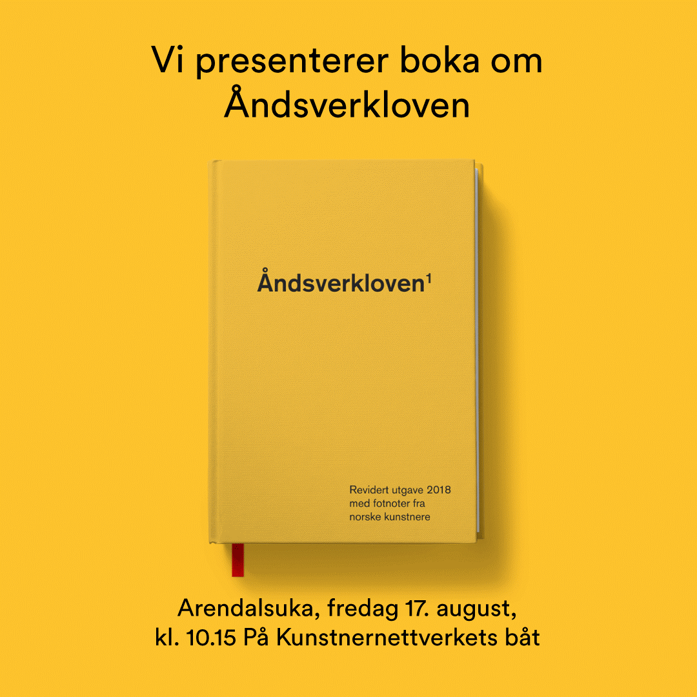

Åndsverkloven omhandler at en opphavsperson (en person som originalt har skapt noe) skal ha rettmessig eierskap til et åndsverk som han eller hun har skapt. Ordet åndsverk er et begrep som brukes i sammenheng med kunst som defineres som vitenskapelige, litterære eller kunstneriske verk uansett form, farge eller uttrykksmåter.